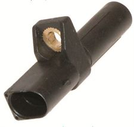
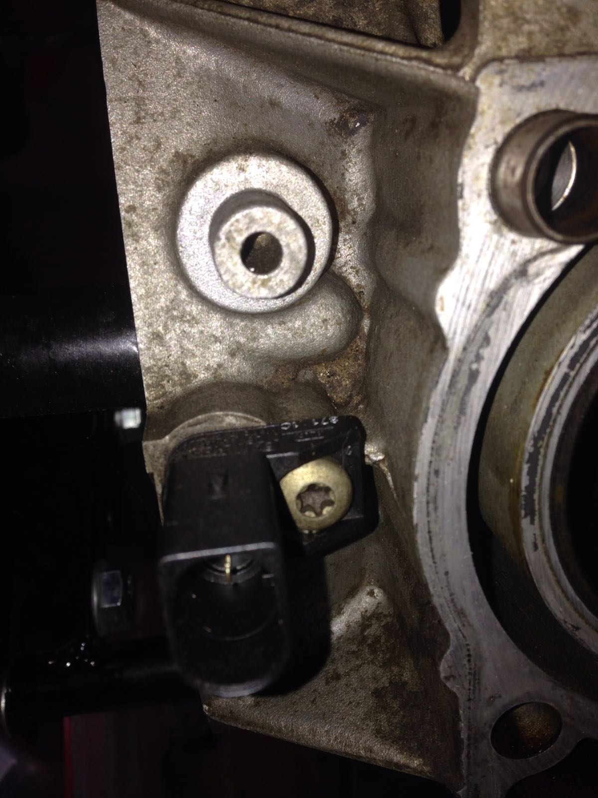

Sustitución del sensor CKP
Contents
Sustitución del sensor CKP#
(by Josep)
{kind=link}
Sacar la caja de la mariposa, son cuatro tornillos y la abrazadera del tubo que llega del intercooler.
La apartamos y debajo está el sensor, entre el bloque motor y el intercooler
Está sujeto con un tornillo torx (T25 o T27 o algo parecido).
El problema puede surgir aquí dependiendo de lo duro que esté. Al estar inclinado igual que el motor, no nos deja acceder a él en línea recta con un alargo. Hay que hacerlo con el típico cardán que llevan las llaves de carraca.
Aquí surge el siguiente problema: la inclinación del conector propio del sensor no nos deja sitio dónde ponerlo. Con lo cual corremos el riesgo (si está muy clavado) de dejar el estriado del tornillo redondo y no tener dónde meter la llave.
En este caso la solución es romper el sensor y trabajar sin problema.
Este es el sensor montado para que se vea su situación:
{kind=link}
Como no se puede por vía directa porque el chasis nos lo impide, tenemos que utilizar un flexible o un cardán. Como se ve, la parte superior del sensor donde se aloja el conector impide poder poner algo.
Solución: romper esta parte. El problema también es que entre la culata y el intercooler el espacio es muy justo y no cabe la mano. Sacando el intercooler es mas fácil y bajando el motor aún más.
Paso 1#
Sacar el tubo que viene del intercooler a la caja de mariposa
Paso 2#
Desconectar la caja de mariposa y sacar los 4 tornillos que la unen al múltiple de admisión.
Al sacarla veremos en el fondo entre el bloque motor y el intercooler el sensor de revoluciones. Desconectamos el cable.
También hay un tubo que, creo que es el de vacío del servofreno, que cruza por encima a nivel de la culata que hay que atarlo a un lado sin forzarlo para que no moleste.
Paso 3#
Ahora conviene tomarse unos segundos para analizar la situación y ver que herramientas vamos a utilizar. Esto es importante porque una mala praxis tiene consecuencias nefastas.
Si no podemos introducir la llave torx con las garantías suficientes de que entre hasta el fondo del tornillo y no se vaya a escapar, es mejor romper la parte superior del sensor (la funda donde se aloja el conector) y se acabó el problema.
Paso 4#
Sacar el tornillo, el sensor viejo, colocar el nuevo y apretar el tornillo con cuidado ya que el problema es el mismo. No apretarlo muy fuerte para evitar que se escape la llave y estropee el tornillo.
Paso 5#
Conectar el sensor, desatar el tubo de vacío y llevarlo a su sitio, montar la caja de mariposa y conectarla, montar el tubo que viene del intercooler y apretar la abrazadera.
Paso 6#
Probar que funciona el motor.
El sensor se puede conseguir en la merche por unos 50€ y por Internet en UK por la mitad.
Más sobre el tema: